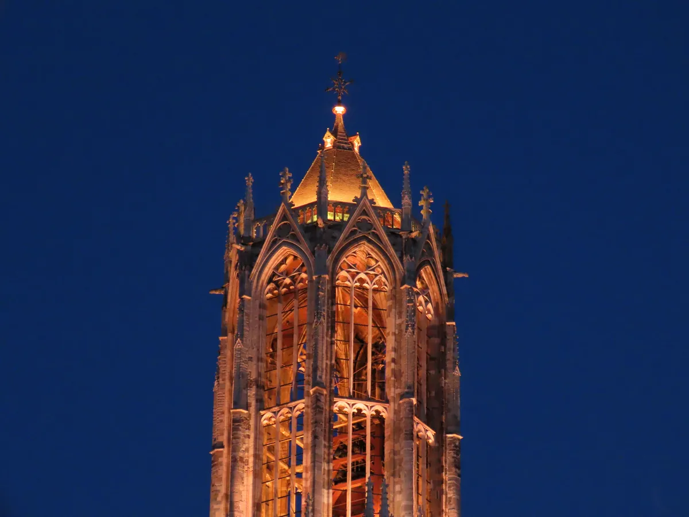
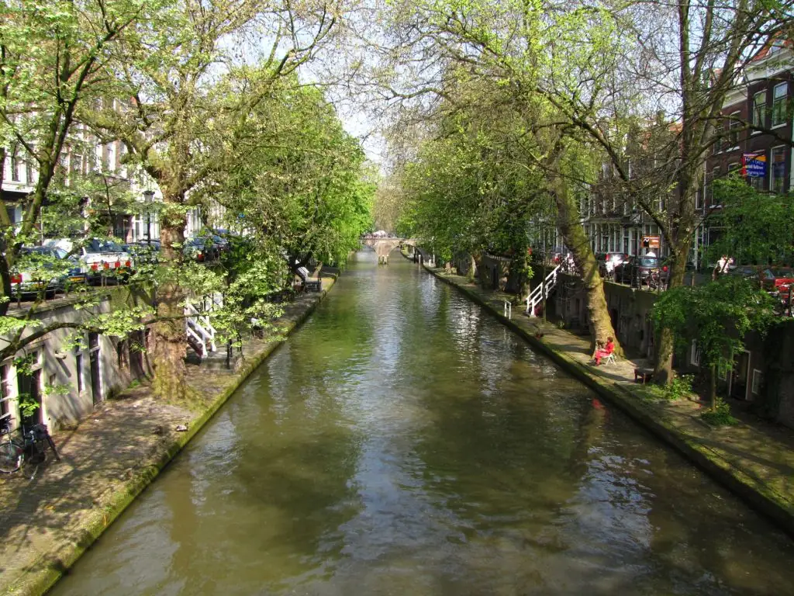
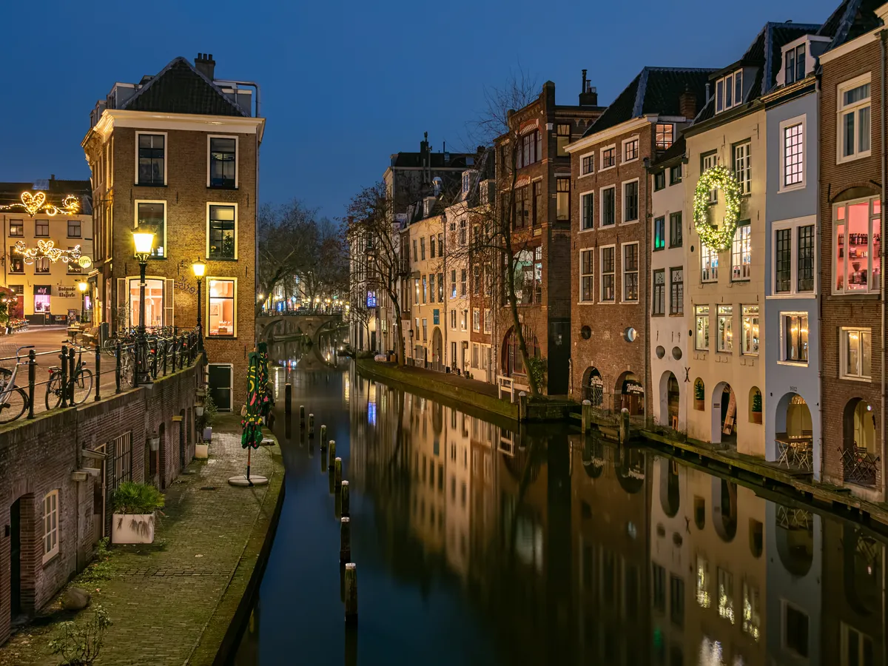
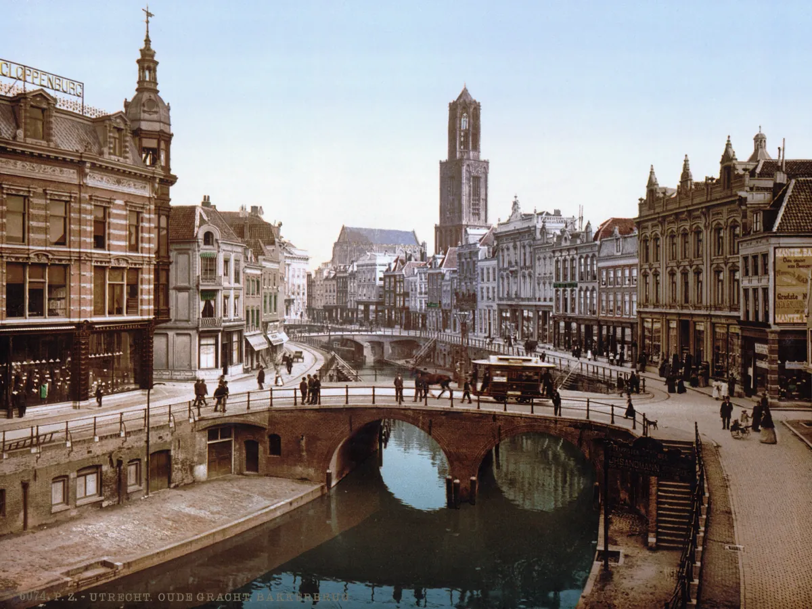
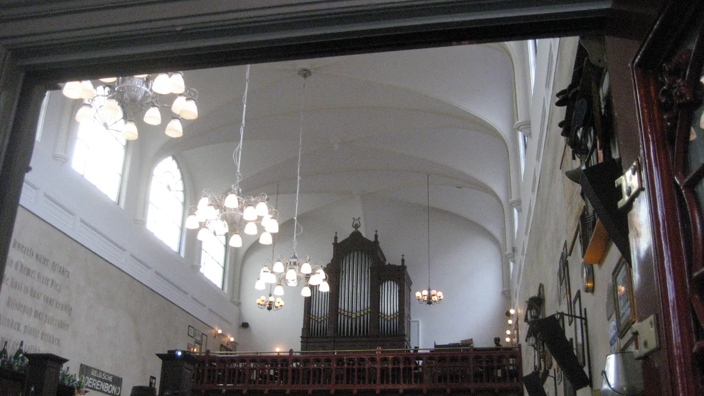

Binnenstad
El corazón medieval. El Oudegracht con sus terrazas bajas, la Dom (112 m) y calles pequeñas llenas de cafeterías de especialidad, librerías y canales.
Un fuerte romano, una catedral partida por un tornado, unos canales con sótanos navegables y una ciudad que se atrevió a deshacer su propia autopista.
La historia de Utrecht se remonta al año 47 d. C., cuando los soldados romanos levantaron un fuerte militar de frontera a orillas del Rin. Bautizado como Traiectum («vía de paso»), formaba parte del Limes Germanicus, la frontera fortificada septentrional del Imperio. Con los siglos, aquel puesto estratégico creció hasta convertirse en el centro religioso, intelectual y comercial de los Países Bajos del Norte.
A inicios del siglo XIV la ciudad empezó a erigir el monumento que definiría para siempre su silueta: la Torre del Dom. Diseñada como parte de la catedral gótica de San Martín, se completó en 1382 con 112,5 metros, la torre de iglesia más alta del país.
La noche del 1 de agosto de 1674, una violenta tormenta supercelular cruzó Utrecht y desató un tornado. En pocos minutos, la nave central que unía el coro con la torre se derrumbó por completo. La torre quedó en pie de milagro, aislada del resto del templo. La plaza que vemos hoy, el Domplein, ocupa exactamente el vacío que dejó aquel tornado y que la ciudad nunca tuvo fondos para reconstruir.

Los canales históricos que serpentean por la ciudad, como el Oudegracht y el Nieuwegracht, son una obra maestra de ingeniería civil medieval única en el planeta: tienen werven (muelles inferiores) y sótanos habitables por debajo del nivel de las calles principales.
En el siglo XII, los ciudadanos de Utrecht consiguieron represar y regular el cauce del Rin instalando esclusas aguas arriba. Eso provocó una bajada permanente del nivel de agua en los canales urbanos, y los mercaderes medievales aprovecharon para excavar sótanos profundos (werfkelders) bajo el pavimento de la calle.
Esos sótanos se extendían en túneles desde los muelles de carga a ras del canal hasta el interior de las casas del plano superior: las barcazas descargaban mercancía pesada directamente en las bodegas sin obstaculizar el tráfico de carruajes y peatones de arriba.
Hoy ese laberinto de ladrillo y arcos es el epicentro social de Utrecht. Los antiguos almacenes acogen terrazas, cafeterías de especialidad, galerías y restaurantes a pie de agua por donde pasan canoas y patos.

Los hitos que moldearon el carácter, la geografía y el espíritu libre de la ciudad.
47 d. C.
Los romanos construyen el fuerte fronterizo (castellum) de Traiectum a orillas del Rin para defender los límites del imperio, estableciendo los cimientos de Utrecht.
1122
El emperador Enrique V concede derechos de ciudad a Utrecht. Comienza la desviación controlada del Rin y la colosal excavación del Oudegracht, que impulsa la economía comercial.
1579
Se firma el tratado de la Unión de Utrecht en la sala capitular de la catedral, sellando la unificación de las provincias rebeldes contra Felipe II de España. Se considera el origen de la República.
1674
Un violento tornado asola el centro histórico. La nave de la catedral gótica de San Martín colapsa en segundos y aísla para siempre la Torre del Dom del resto del templo.
1843
La primera línea de ferrocarril entre Ámsterdam y Utrecht convierte a la ciudad en el nudo central e indiscutible de toda la red ferroviaria holandesa.
Hoy
Utrecht tiene la mayor red ciclista y el aparcamiento de bicicletas subterráneo más grande del mundo (12.500 plazas) bajo la Estación Central, liderando la movilidad urbana sostenible.
Desliza el tirador central de izquierda a derecha para comparar el Oudegracht de Utrecht en 1900 frente a la actualidad.


La foto histórica (izquierda) muestra el bullicio fluvial del canal Oudegracht en 1900, con barcazas de carga. A la derecha, la vista actual del mismo canal, convertido en un animado paseo lleno de terrazas y arbolado.
Más allá del «antes y después»: por qué esta es una de las ciudades más habitables y ciclistas del mundo.
En los años 70, Utrecht rellenó este canal para una autopista urbana. En 2020, medio siglo después, volvió a excavarlo y devolvió el agua, los árboles y las bicis. Desliza para verlo.
Toca cada punto para ver cómo conviven bici, agua, verde y seguridad en pocos metros.
👆 Toca un punto rojo de la calle
Cada elemento cuenta cómo Utrecht mezcla movilidad, naturaleza y seguridad en el mismo espacio.
0
plazas en el mayor aparcamiento de bicis del mundo (Utrecht Centraal)
0
de los desplazamientos urbanos se hacen en bicicleta
0
de autopista revertidos al recuperar el canal Catharijnesingel
0
la nueva velocidad por defecto en la mayoría de calles
Utrecht anima a los vecinos a arrancar el adoquinado y plantar. Menos asfalto, más biodiversidad y una ciudad que absorbe la lluvia. Pulsa el botón.
Años 60–70
En plena fiebre del coche, Utrecht rellena canales históricos para construir carreteras y una autopista urbana sobre el Catharijnesingel.
Años 70–80
Los Países Bajos inventan el woonerf, la calle compartida donde manda el peatón, y empiezan a frenar la dictadura del automóvil.
Años 90–2010
Se teje una red ciclista continua y segura: carriles separados, rotondas con prioridad para la bici y puentes solo para peatones y ciclistas.
2019
Abre bajo la estación el mayor aparcamiento de bicicletas del mundo: 12.500 plazas.
2020 · hoy
Utrecht vuelve a excavar el Catharijnesingel y devuelve el agua. Hoy cerca de la mitad de los desplazamientos se hacen pedaleando.
Pasa el cursor o toca cada tarjeta.
1. ¿Cuántas bicis caben en el aparcamiento de Utrecht Centraal?
Abrió en 2019 y es, en efecto, el mayor aparcamiento de bicicletas del planeta.
2. ¿Qué hizo Utrecht con el canal Catharijnesingel?
En 2020 reabrió el canal completo: uno de los grandes símbolos de «deshacer» la ciudad del coche.
3. ¿Qué es un «geveltuin»?
Es la jardinería de fachada que reverdece las calles del centro casa por casa.
Desliza horizontalmente →
Seis áreas con personalidad propia. Saber cuál es cuál cambia por completo el viaje.
El corazón medieval. El Oudegracht con sus terrazas bajas, la Dom (112 m) y calles pequeñas llenas de cafeterías de especialidad, librerías y canales.
Diversidad y gastronomía exótica. Kanaalstraat ofrece puestos de comida de todas partes del mundo, restaurantes y un ambiente joven y desenfadado.
Antigua zona industrial reconvertida en hub de diseño, galerías independientes, cervecerías artesanales de barrio y terrazas junto al canal.
Casas de ladrillo rojo del siglo XIX, calles arboladas tranquilas y el parque Lepelenburg. Un barrio elegante con encanto clásico.
Arquitectura vanguardista, el Máximapark (el parque más grande) y un aire muy familiar, conectado por ciclovías rápidas.
Barrio obrero con identidad propia, alejado del turismo. El parque de la ribera del Vecht y la calle comercial Amsterdamsestraatweg.
La identidad de Utrecht está hecha de leyendas de generosidad compartida, fiestas multitudinarias en los canales y locales que guardan siglos de historia.
San Martín de Tours es el patrón de Utrecht. La leyenda del santo militar partiendo su capa roja con la espada para cubrir a un mendigo define los colores de la bandera y el escudo de la ciudad (dividido en rojo y blanco en diagonal). Cada 11 de noviembre los niños desfilan cantando por las calles medievales con farolillos de papel hechos a mano.
A diferencia de Ámsterdam, el Día del Rey en Utrecht tiene un encanto mucho más vecinal. Arranca la noche anterior (Koningsnacht) con mercados libres de segunda mano montados por los propios vecinos en el suelo, y durante el día decenas de barcos llenos de música en directo y trajes naranjas colapsan alegremente los canales.
Los cafés marrones son el epicentro de la calidez social holandesa (gezelligheid). Estos pubs históricos de paneles de madera oscura y luz dorada son el punto de reunión para una cerveza y unas bitterballen. El más emblemático es el Biercafé Olivier, un bar dentro de una antigua iglesia clandestina decimonónica.

Belgisch Biercafé Olivier. Oculto tras la fachada de una calle residencial, este bar ocupa una iglesia clandestina del siglo XIX y conserva intactos el altar, el órgano y las bóvedas de madera.
Dick Bruna, el creador de la famosa conejita Miffy, nació en Utrecht. Puedes encontrarla por toda la ciudad: el Nijntje Museum, un museo interactivo espectacular para niños pequeños; los semáforos de Miffy en el cruce peatonal de Lange Viestraat; y su estatua en la plaza Nijntjepleintje.
Palabras y expresiones con su significado, pronunciación y contexto cultural.
Festivales, ferias y mercados tradicionales que se repiten cada año.
Cargando agenda…
Qué florece y dónde verlo, para saber en qué mes viene la ciudad más bonita.
Cargando flora…